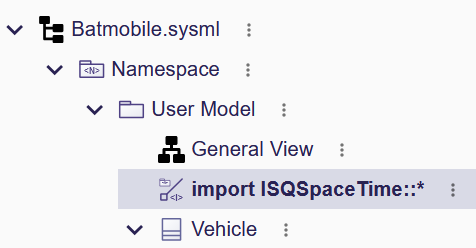

Create Your First Model
This tutorial provides a beginner-friendly guide on creating your first SysML v2 model with SysON, adapted from the example in the Don’t Panic - The Absolute Beginner’s Guide to SysML v2 book by Tim Weilkiens and Christian Muggeo. The focus is on representing the Batmobile system, the iconic car of Batman.
1. Step 1: Create a Project
-
Open the Projects Browser and create a new SysML v2 project by clicking on the SysML v2 card.
-
The Project Editor automatically opens, creating a new project named
SysML v2with a packagePackage1. A defaultGeneral viewrepresentation associated with the package is opened in the main editor area. -
From the project toolbar, rename the project to
Batmobile. -
From the Project Explorer, rename the model to
Batmobileand the package toUser Model.
2. Step 2: Create Elements from a Diagram
2.1. Using the Contextual Toolbar
-
In the main editor area, click on the diagram background to open the Contextual Toolbar.
-
Click on the
New Part Definitiontool to create a new part definition.The new elements created from the Contextual Toolbar are visible either from the Project Explorer or the Project Editor main central area.
-
Rename the part definition to
Vehicleusing the direct-edit action or the Details view. -
Select the
Vehiclepart definition and click on theNew Itemtool to create an item usage. -
Rename the item usage to
driver. -
Select the
Vehiclepart definition and click on theNew Parttool to create a new part usage. -
Rename the part usage to
engine.
2.2. Setting Multiplicity
-
Select the
Vehiclepart definition and click on theNew Parttool in the Contextual Toolbar to create a new part usage -
Rename the part usage to
wheels.
2.3. Using Drag and Drop
-
Select the
wheelspart usage, type "F2" and rename itwheels[4] : Wheel. -
A new
Wheelpart definition is created in the model. -
Drag and drop the
Wheelelement from the Project Explorer onto the diagram background. -
The
Wheelpart definition appears on the diagram within theTyped Byrelationship between theWheeland thewheelspart usage.
3. Step 3: Edit the Model Elements
3.1. Adding Attributes
-
Select the
Vehiclepart definition and click on theNew Attributetool in the Contextual Toolbar. -
A new attribute usage is created.
-
Select the attribute and use the direct-edit tool to rename it to
actualSpeed : SpeedUnit -
A new import element appears in model which refers to the library
ISQSpaceTimethat containsSpeedUnit -
The attribute usage
actualSpeedis typed with the new attribute definition.
3.2. Creating Specialization
-
Click on the diagram background and click on the
New Part Definitiontool. -
A new part definition is created.
-
Rename it
Batmobile:> Vehicle. -
A new
specializationrelationship is created between theBatmobilepart definition and theVehiclepart definition.
3.3. Creating Subsetting
-
Click on the diagram background and select the
New Parttool. -
A new part usage is created.
-
Rename it to
frontRightWheel :> wheels. -
A new
subsettingrelationship appears between the two parts usagesfrontRightWheelandwheels. -
Redo same actions by creating new part
frontLeftWheel :> wheels.
3.4. Creating Redefinition
-
Click on the diagram background and click on the
New Parttool. -
A new part usage is created.
-
Rename it to
bulletProofWheels[4]:>>wheels. -
A new
redefinesrelationship appears between thebulletProofWheelspart definition and the`wheels` part usage.
4. Step 4: Create Relationship
4.1. Creating specialization relationship
-
Click on the diagram background and click on the
New Part Definitiontool. -
A new part definition is created.
-
Rename it
BatmobileNG -
Click on node
BatmobileNG. -
Click on arrow border and hold down until
Batmobile:> Vehiclenode. -
Select the
Subclassificationtool.
4.2. Creating containment relationships
-
Click on node
frontRightWheel :> wheels. -
Click on arrow border and hold down until
Batmobile:> Vehiclenode. -
Select the
Become nested parttool. -
A new containment edge is created and element
frontRightWheelis moved underBatmobilein model -
Redo same actions with
frontLeftWheel :> wheels. -
Click on node
bulletProofWheels[4] :>> wheels. -
Click on arrow border and hold down until
BatmobileNG:> Batmobilenode. -
Select the
Become nested parttool. -
A new containment edge is created and element
bulletProofWheelsis moved underBatmobileNGin model
|
To explore a larger Batmobile example, use the Batmobile template available on the Projects Browser. |